Niveau -1
Spa & soins
Hammam, sauna, douches, vestiaires, deux cabines de soin, local technique. Lumière rasante, matériaux pleins.

Une parapharmacie qui prolonge le produit jusqu'au rituel : la vente occupe le rez-de-chaussée et la mezzanine, le spa et ses cabines descendent en sous-sol. Un seul matériau narratif les relie — la pierre.
01
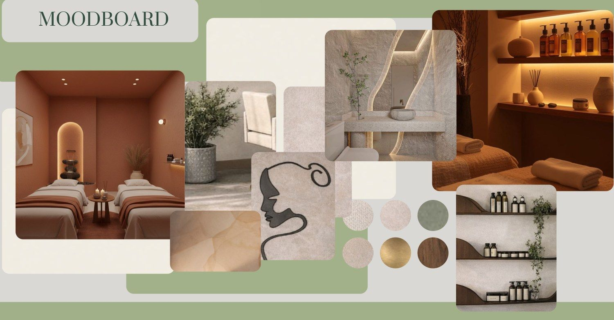
Le brief implicite d'une parapharmacie : des rayons, du blanc, de la vitesse. Le concept inverse la polarité — le blanc devient crème, le linéaire devient courbe, la vitesse devient descente.
Chaque niveau a son caractère. Le sous-sol accueille hammam, sauna, douches et cabines de soin dans une lumière basse et minérale. Le rez-de-chaussée expose les produits sur des présentoirs cintrés autour d'un îlot central. La mezzanine complète avec stockage, bureau et sanitaires, en retrait du parcours client.
La cohérence tient à un vocabulaire unique : travertin et terrazzo au sol, bois clair cintré sur tous les contours — comptoirs, niches, portes de cabines.
Niveau -1
Hammam, sauna, douches, vestiaires, deux cabines de soin, local technique. Lumière rasante, matériaux pleins.
Niveau 0
Accueil-caisse, linéaires vitrines, îlot central, alcôve conseils, espace self-care et cabine d'esthétique.
Niveau +1
Stockage, bureau, sanitaires — la coulisse du commerce, hors du regard client.
02
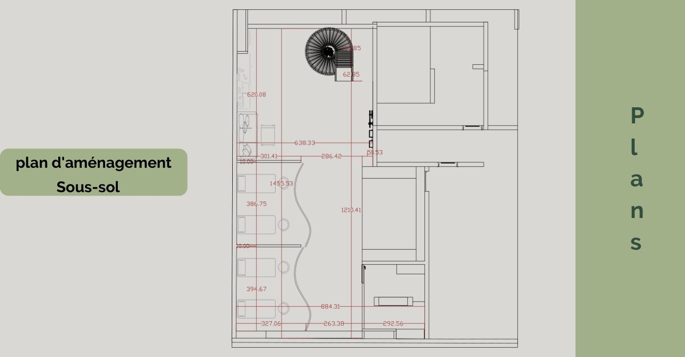
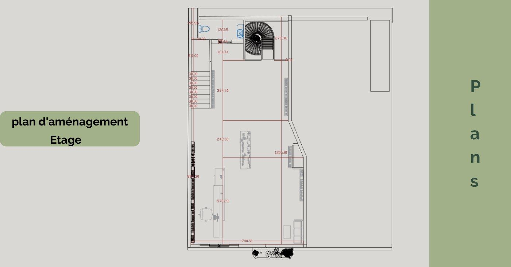
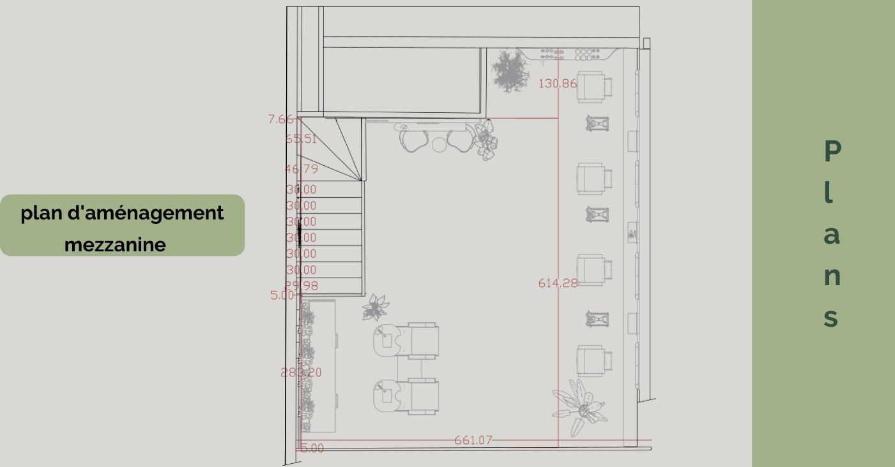
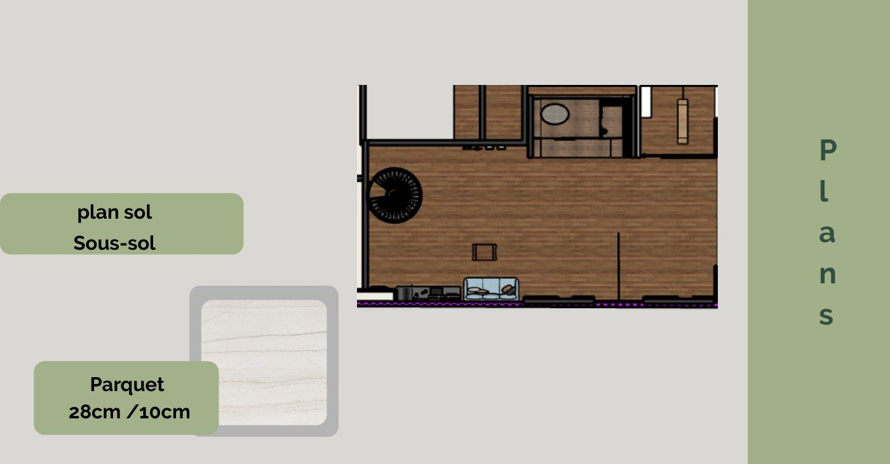
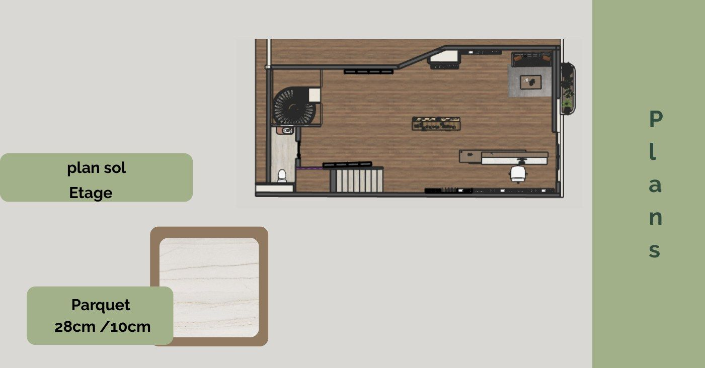
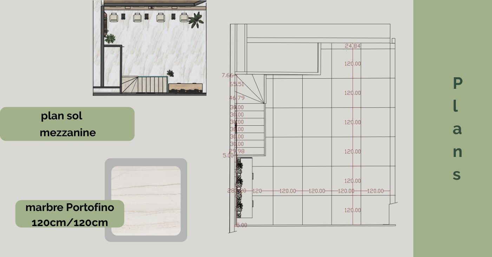
Cliquez sur n'importe quel document pour l'agrandir. Les plans sont issus des relevés AutoCAD du projet.
03
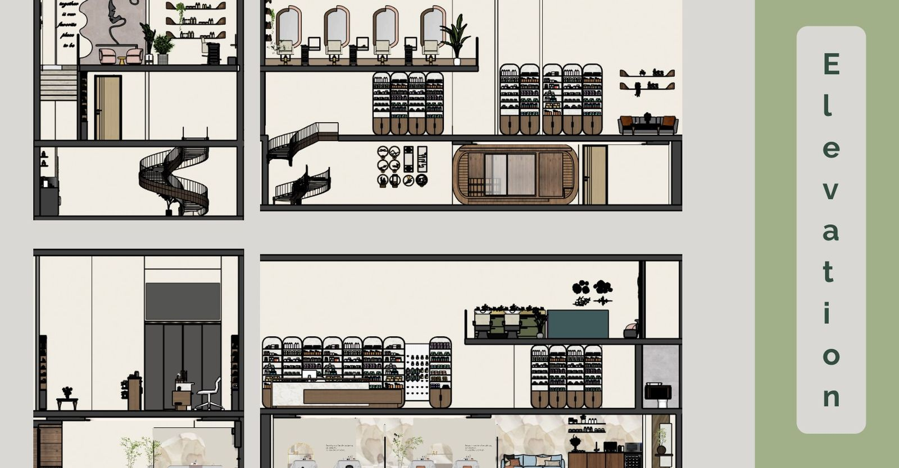
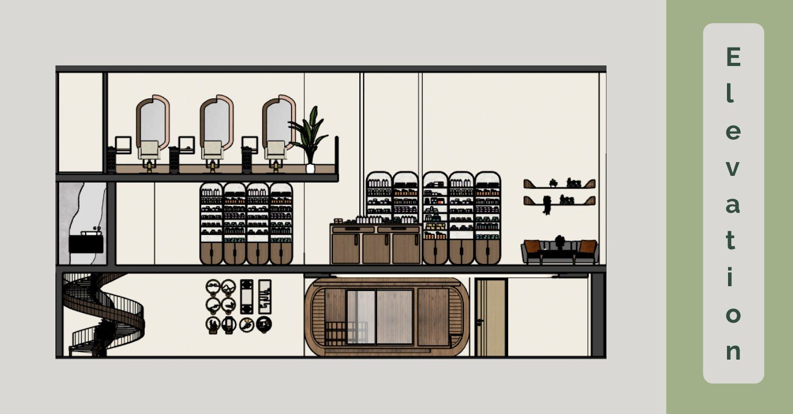
04
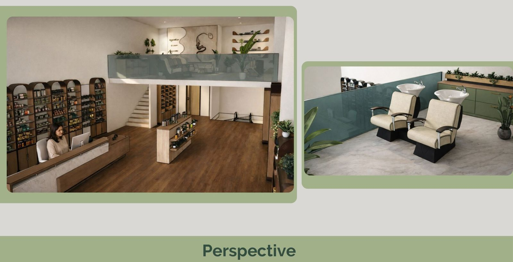
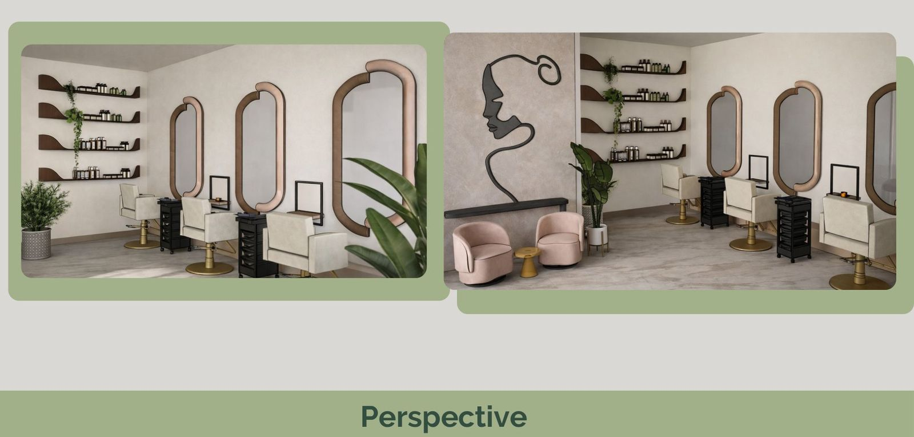
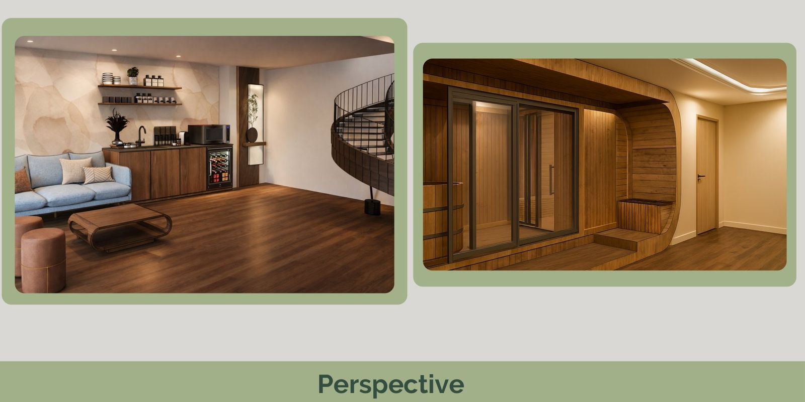
Rendus 3D du concept (SketchUp / V-Ray). Projet d'étude personnelle : aucun établissement réel ni marque cliente associée.